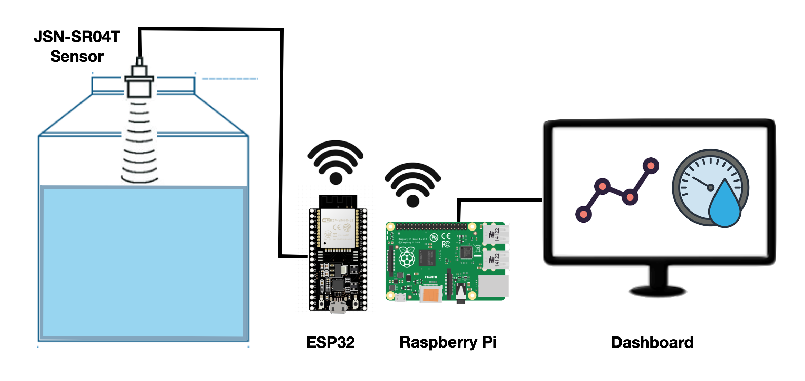
Tabla de Contenidos
- Por qué hacer un monitor de nivel de agua
- Cómo funciona el sensor de nivel de agua
- Componentes del sensor de nivel de agua
- Cómo construir el sensor de nivel de agua
- Leyendo los datos del sensor de nivel de agua
- Guardando los valores en una base de datos
- Visualizando los datos
- Cómo usar los datos del sensor
- Más recursos
- Código
En este artículo, explicaré cómo hacer un sensor de nivel de agua con un sensor ultrasónico JSN-SR04T, un microcontrolador ESP32 y una Raspberry Pi.
Si quieres ir directo al repositorio de GitHub, haz clic aquí código al final del artículo.
Por qué hacer un monitor de nivel de agua
En la Ciudad de México, así como en otros países latinoamericanos, el agua generalmente se recolecta en un tanque de agua a nivel del suelo y luego se bombea a otro tanque de agua en la parte superior del edificio con una bomba de agua. La presión del agua en el hogar o negocio se obtiene por la altura del tanque de agua, en lugar de usar un tanque de compresión.
El tanque de agua superior a veces puede ser difícil de alcanzar y si hay una fuga o escasez de agua, para cuando se nota, los tanques de agua pueden estar ya vacíos y necesitar atención inmediata.
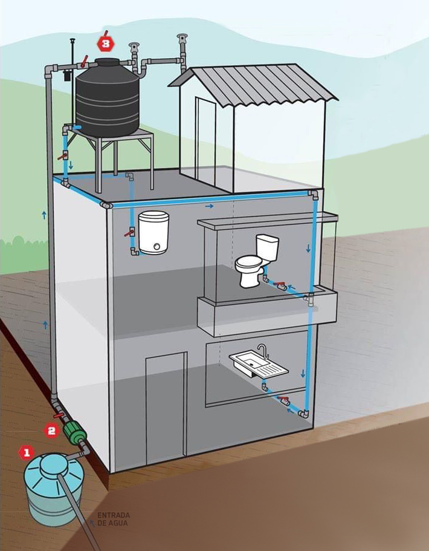
Diagrama que muestra una configuración típica para una casa en la Ciudad de México
Para ayudar con este problema, podemos colocar un sensor de nivel de agua en el tanque de agua superior y configurar una alerta si el nivel de agua cae por debajo del 50%.
Con esta configuración podemos monitorear el tanque de forma remota, verificar la cantidad de agua que uso y recibir una alerta si hay un problema antes de que sea una emergencia.
Cómo funciona el sensor de nivel de agua
El JSN-SR04T es un sensor ultrasónico impermeable colocado en la tapa del tanque de agua. Toma mediciones cada 5 minutos y calcula la distancia desde la tapa hasta el nivel de agua dentro del tanque. Luego transmite esa información a un microcontrolador ESP32.
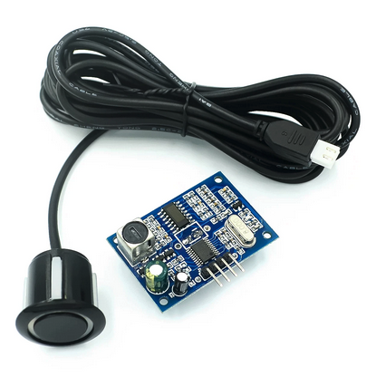
Sensor ultrasónico impermeable JSN-SR04T
Usando Wi-Fi, el ESP32 luego envía la medición a una computadora Raspberry Pi en la misma red usando el protocolo MQTT.
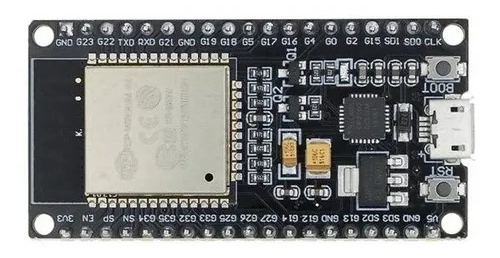
Microcontrolador ESP32. También puedes usar un ESP8266.
La Raspberry Pi luego calcula el volumen de agua en el tanque y lo guarda en una base de datos Influx DB.
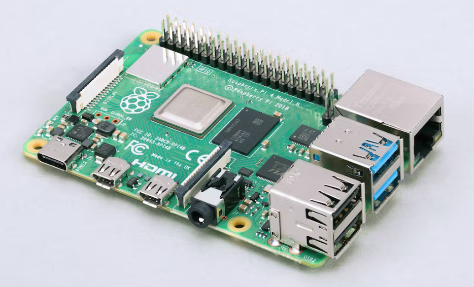
Computadora Raspberry Pi
También en la Raspberry Pi, Grafana, un software de visualización de código abierto se usa para leer la base de datos y mostrar la información.
Finalmente, se configura una alarma en Grafana, de modo que si el nivel de agua cae por debajo de un valor umbral, se activa una alarma y se envía un mensaje de Telegram para alertar a los usuarios del problema.
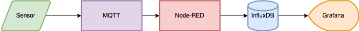
Diagrama de flujo del monitor de nivel de agua
Componentes del sensor de nivel de agua
Para construir el sensor de nivel de agua se necesita lo siguiente:
Hardware:
- 1 microcontrolador ESP32 o 1 microcontrolador ESP8266
- 1 computadora Raspberry Pi
- 1 JSN-SR04T sensor ultrasónico
- Un tomacorriente para el microcontrolador y el sensor
- Conducto eléctrico de PVC (opcional)
- Adaptador de sensor impreso en 3D (opcional)
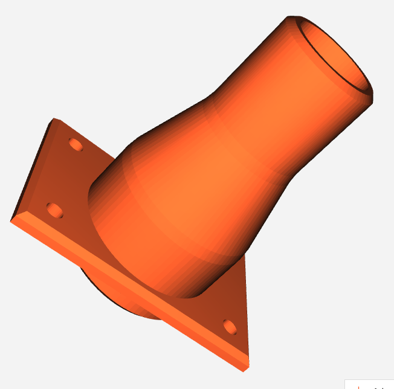
Adaptador de sensor impreso en 3D
Software:
- Una conexión WiFi
- Placa ESP8266
- Biblioteca Arduino EspMQTTClient.h
- Node-RED
- Mosquitto MQTT
- InfluxDB
Elegí el sensor JSN-SR04T porque es impermeable y puede proporcionar un rango preciso de hasta 4 metros. Requiere 3V para funcionar, por lo que puede ser alimentado directamente por el microcontrolador ESP32.
Para que la configuración funcione, el ESP32 debe estar dentro del alcance de tu red Wi-Fi. De esta manera puede enviar los datos del sensor a la Raspberry Pi. Además, tanto el ESP32 como la Raspberry Pi deben estar en la misma red de área local.
Puedes usar un microcontrolador ESP32 o un ESP8266. Ambos funcionarán y ambos se configuran exactamente de la misma manera.
Cómo construir el sensor de nivel de agua
Conexiones
Para configurar el sensor, simplemente conecta los cables siguiendo el diagrama eléctrico a continuación:
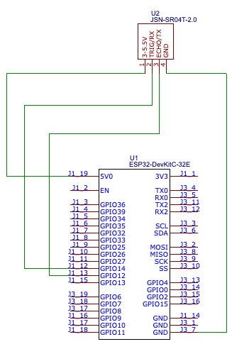
Diagrama de conexiones eléctricas
Caja exterior
Como esta es una configuración exterior, coloca los cables dentro de un conducto eléctrico para protegerlos de la lluvia y el sol.
También necesitarás asegurarte de colocar un tomacorriente cerca para alimentar el ESP32 y el sensor.
Para proteger el ESP32, parte del sensor ultrasónico y el tomacorriente, coloca todo dentro de una caja eléctrica impermeable fijada a una pared.
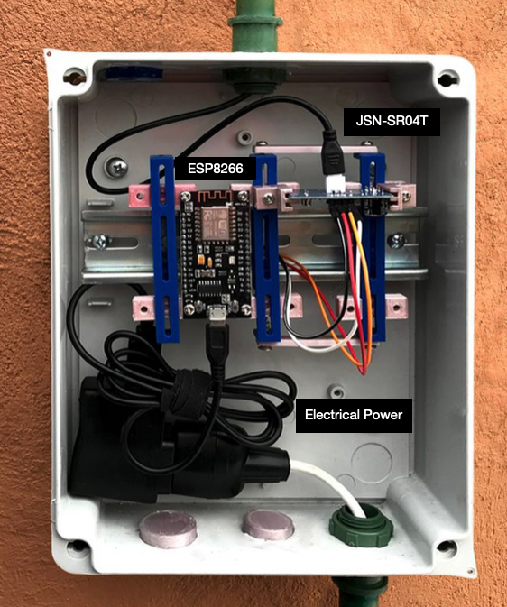
Configuración de caja eléctrica impermeable
Dentro de la caja eléctrica, fija el ESP32 y parte del sensor usando rieles Din para mantenerlo en su lugar.
Para hacer un adaptador exacto, puedes comprar soportes de riel Din u obtener los archivos impresos en 3D y hacer el tuyo propio desde aquí
Para configurar el sensor, perfora un agujero en la parte superior del tanque de agua. El sensor tiene accesorios de presión de silicona que deberían mantenerlo fijo en su lugar.
Puedes hacer un adaptador de tanque de agua impreso en 3D
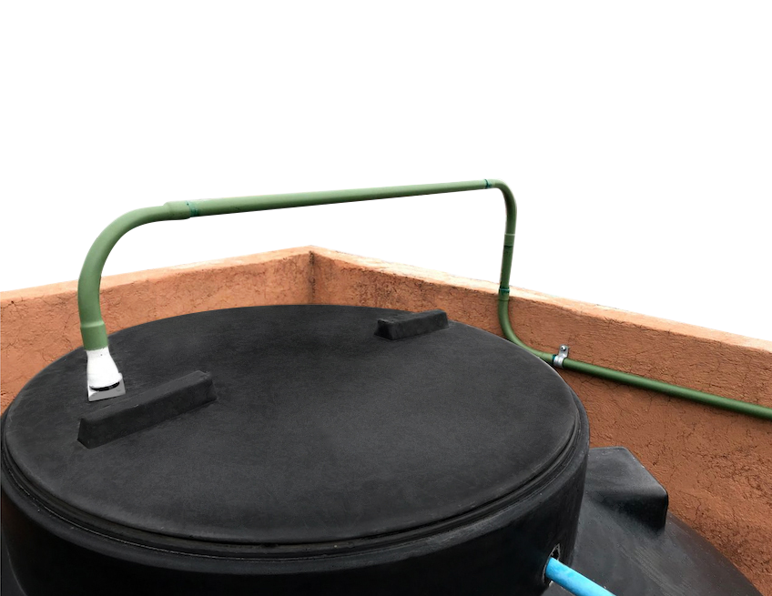
Detalle de instalación del sensor
Mediciones utilizadas
Ahora debemos tomar las medidas del tanque de agua para calcular su volumen máximo de agua.
Este tanque de agua en particular se puede separar en dos formas diferentes: un cilindro y un cono con la parte superior cortada (llamado cono truncado).
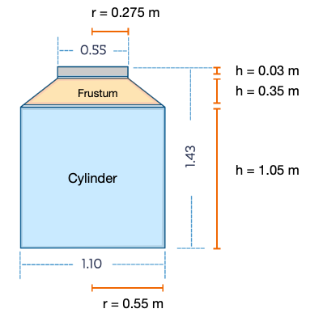
Medidas del tanque de agua
Las fórmulas para calcular el volumen de ambas formas son:
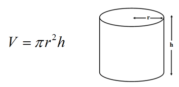
Fórmula del volumen del cilindro
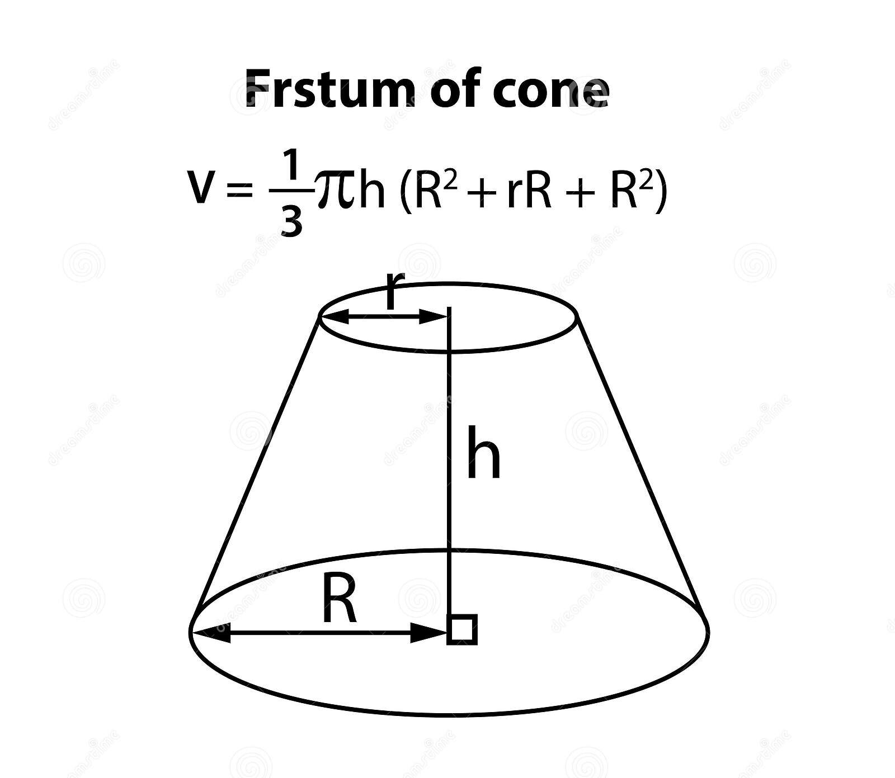
Fórmula del volumen del cono truncado
Usando ambas fórmulas, podemos calcular el volumen del tanque de agua de la siguiente manera:
- Volumen del cilindro: 998 Litros
- Volumen del cono truncado: 119 Litros
- Volumen total: 1,117 Litros
En este caso, había dos tanques de agua idénticos, así que duplicamos la cantidad para obtener el volumen total máximo de agua.
Leyendo los datos del sensor de nivel de agua
Después de tomar las medidas del tanque de agua y calcular su volumen, podemos usar el sensor para calcular la altura desde la parte superior del tanque de agua hasta la línea de agua y luego restar esa altura de las fórmulas del cono truncado y del cilindro.
Para calcular la distancia del sensor a la línea de agua usamos este código y lo cargamos al ESP32.
El código lee los datos del sensor JSN-SR04T y los envía a través de MQTT a la Raspberry Pi.
Una vez cargado, abre el monitor serial de Arduino para asegurarte de que estaba funcionando correctamente.
Conecta la Raspberry Pi y confirma que el Broker MQTT Mosquitto esté recibiendo los valores que el ESP32 está reportando.

Configuración completa del monitor de nivel de agua
Guardando los valores en una base de datos
Después de confirmar que MQTT está funcionando correctamente, necesitamos configurar Node-RED para leer los datos MQTT, guardarlos como un objeto JSON y luego escribirlos en una base de datos Influx DB que se configuró previamente.
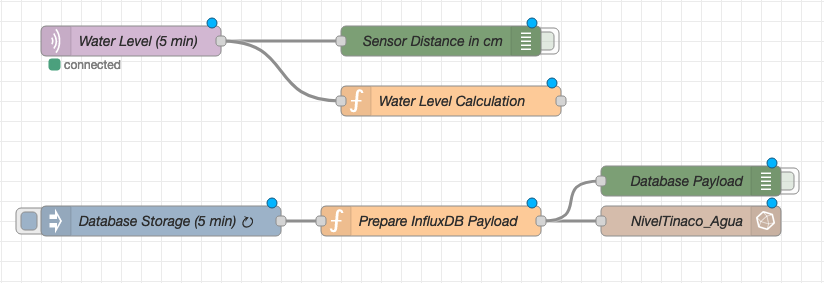
Configuración de Node-RED en Raspberry Pi
- El nodo 'Water Level' lee el mensaje MQTT.
- El nodo 'Water Level Calculation' calcula el volumen de agua teniendo en cuenta la distancia a la línea de agua.
- El 'Database Storage' lee la variable de volumen cada 5 minutos.
- El nodo 'Prepare InfluxDB Payload' agrega la fecha y hora, y guarda la salida como un objeto JSON.
- El nodo 'NivelTinaco_Agua' guarda la información en Influx DB en una base de datos con el mismo nombre.
- Los nodos verdes se usan para depuración y pruebas.
El resto de los nodos se configuran a través del menú de nodos en Node-RED y no necesitan ningún código.
Para verificar que los datos fueran accesibles, inicia sesión en la base de datos Influx DB usando la terminal y echa un vistazo a los valores.
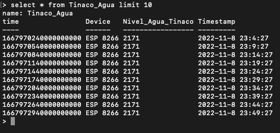
Base de datos InfluxDB mostrando datos almacenados
Visualizando los datos
Después de asegurarnos de que la información se está escribiendo correctamente en la base de datos influx DB, configuremos Grafana para visualizar los datos.
Grafana es una gran herramienta para la visualización de datos porque es de código abierto, fácil de usar y produce excelentes gráficos dinámicos.
Puedes hacer un tablero con una lectura de Medidor para el nivel de agua actual y también una serie temporal para mostrar los valores de agua durante un período de 24 horas.
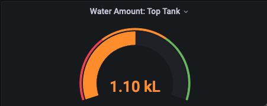
Medidor de nivel de agua actual
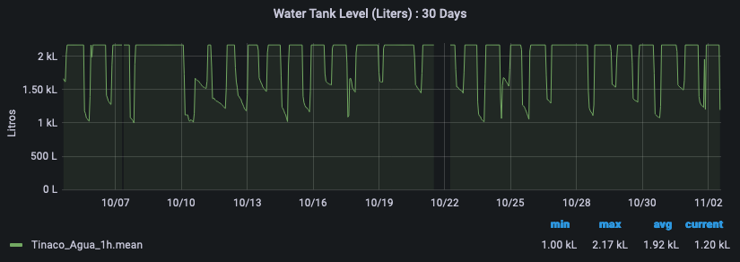
Serie temporal de nivel de agua de 24 horas
En el gráfico puedes ver cómo el nivel de agua cae periódicamente (duchas matutinas, lavar ropa al mediodía) y se restaura gradualmente con el tiempo.
Los niveles de agua no parecen caer por debajo de la marca de 1,000L, pero se configura una alarma para enviar un mensaje de Telegram si el nivel de agua cae por debajo de este valor umbral.
Cómo usar los datos del sensor
Los datos del sensor son útiles porque verifica el nivel de agua cada 5 minutos y envía una alarma si el nivel es demasiado bajo.
Nos permite saber si hay un problema, lo que nos da tiempo para solucionarlo con suficiente agua disponible para tareas esenciales.
También es un sensor útil porque nos permite verificar el consumo diario de agua y cómo esa tendencia cambia con el tiempo.
Medir es el primer paso hacia la eficiencia y un futuro más sostenible.
Más recursos
Espero que hayas encontrado este artículo interesante. Construir el sensor de agua fue un proyecto divertido y gratificante, y lo he encontrado muy útil.
Si decides construir una configuración similar de monitoreo de nivel de agua, te animo a ser creativo y ver cómo puedes personalizarla para adaptarla a tus necesidades específicas. Hay muchas variaciones y mejoras posibles que podrías hacer, como integrarlo con sistemas de hogar inteligente o expandir la red de sensores a múltiples tanques. La clave es empezar poco a poco, experimentar y no tener miedo de solucionar problemas cuando las cosas no funcionen como se esperaba.
No dudes en contactarme si decides construir uno y necesitas ayuda.
También hice un Monitor de Energía IoT. Puedes encontrar el artículo sobre eso aquí
Finalmente, aquí hay algunos recursos adicionales que usé para hacer posible este proyecto:


Código
Código Arduino cargado al ESP32:
C++ (Arduino)
// Code to measure water level in a water tank
// Mills Function
const unsigned long event_interval = 300000; // 5 minute interval, 300 second
//const unsigned long event_interval = 2000; // 2 second interval. For testing
unsigned long previous_time = 0;
// MQTT Library
#include "EspMQTTClient.h"
#define WIFI_SSID "<Wifi_Username_here>" // WiFi Username
#define WIFI_PASS "<Wifi_Password_here>" // Wifi Password
#define BROKER_IP "<MQTT_ip_here>" // IP address of MQTT broker
#define BROKER_USERNAME "<broker_username_here>" // Broker username
#define BROKER_PASSWORD "<broker_password_here>" // Broker password
#define CLIENT_NAME "<device_name_here>" // MQTT client name to identify the device
#define BROKER_PORT <mqtt_port_here> // MQTT Port. No "" needed
#define lastwill_topic "<lastwill_topic_here>" // MQTT topic to report last-will and testament.
#define lastwill_text "<lastwill_message_here>" // MQTT message to report last-will and testament.
String client_name = CLIENT_NAME; // MQTT Topic to report initial value
String startup_topic = "<startup_topic_here>"; // MQTT Topic to report startup
String water_level_topic = "<reporting_values_topic_here>"; // MQTT topic to report values
// Function to connect to MQTT
EspMQTTClient client(
WIFI_SSID,
WIFI_PASS,
BROKER_IP,
BROKER_USERNAME,
BROKER_PASSWORD,
CLIENT_NAME,
BROKER_PORT
);
// Water Sensor pins
#define TRIG 14 //GPIO Number 14, D5
#define ECHO 12 //GPIO Number 12, D6
void setup() {
Serial.begin(115200); // Serial monitoring
// Enable debugging messages sent to serial output
client.enableDebuggingMessages();
// Enable the web updater.
client.enableHTTPWebUpdater();
// MQTT Last Will & Testament
client.enableLastWillMessage( lastwill_topic , lastwill_text);
// Water level sensor Pin Setup
pinMode(TRIG, OUTPUT); // Initializing Trigger Output
pinMode(ECHO, INPUT_PULLUP); // Initializing Echo Input
}
// MQTT Initial Connection
void onConnectionEstablished() {
client.publish(startup_topic, String(client_name + " is now online."));
}
void loop() {
// MQTT Loop: Must be called once per loop.
client.loop();
// Mills Loop
unsigned long current_time = millis();
// Mills if Statement
if(current_time - previous_time >= event_interval) {
// Set the trigger pin to low for 2uS
digitalWrite(TRIG, LOW);
delayMicroseconds(2);
// Send a 20uS high to trigger ranging
digitalWrite(TRIG, HIGH);
delayMicroseconds(20);
// Send pin low again
digitalWrite(TRIG, LOW);
// Read pulse times
int distance = pulseIn(ECHO, HIGH,26000);
//Convert the pulse duration to distance
distance= distance/58;
//Print Result in serial monitor
Serial.print("Distance ");
Serial.print(distance);
Serial.println("cm");
// MQTT Client Publisher
client.publish(water_level_topic, String(distance));
// Mills Update timing for next time
previous_time = current_time;
}
}
Código Node-RED utilizado:
Nodo Water Level Calculation:
JavaScript (Node-RED)
// Code to calculate the available water in the water tank.
// Used in node: 'Water Level Calculation'
// Get sensor distance in meters
msg.payload = Number(msg.payload)/100;
sensor_distance = msg.payload;
// Constants
var pi = 3.141592;
var Liters = 0;
var VolumeFullCylinder = 998;
// Function to calculate water in Frustum
function FrustumVolume(x) {
height = 0.35 - x
FrustumWaterVolume = (pi/3)*height*(0.55**2 + 0.275**2 + 0.55*0.275)
return FrustumWaterVolume*1000
}
// Function to calculate water in Cylinder
function CylinderVolume(x) {
height = 1.05 - x + 0.35
CylinderWaterVolume = pi * 0.55**2 * height
return CylinderWaterVolume*1000
}
// Test to check total water volume
if (sensor_distance < 0.20) {
Message = "Error: Value is too low. Check Sensor";
Liters = 0;
msg.payload = Liters
} else if (sensor_distance >= 0.20 && sensor_distance <= 0.35) {
Message = "Water is in Frustum.";
Liters = FrustumVolume(sensor_distance)+ VolumeFullCylinder;
Liters = Math.round(Liters*2) // Multiply x 2 because there are 2 water tanks
msg.payload = Liters
} else if (sensor_distance > 0.35 && sensor_distance <= 1.40) {
Message = "Water is in the cylinder section.";
Liters = CylinderVolume(sensor_distance);
Liters = Math.round(Liters*2) // Multiply x 2 because there are 2 water tanks
msg.payload = Liters
} else {
Message = "Error: Value is to high. Check Sensor";
Liters = 9999;
msg.payload = Liters
}
// Prepare node to send information
msg.payload = Number(msg.payload);
flow.set("water_in_tank",msg.payload);
flow.set("water_level_sensor","ESP32");
return {payload: msg.payload};
Nodo Prepare InfluxDB Payload:
JavaScript (Node-RED)
// Code to prepare water level data to save it into InfluxDB
// Used in node: 'Prepare InfluxDB Payload'
var today = new Date();
var date = today.getFullYear()+
'-'+ (today.getMonth()+1)+
'-'+ today.getDate() +
' ' + today.getHours() +
":" + today.getMinutes() +
":" + today.getSeconds();
msg.payload = {
Timestamp:date,
Device:flow.get("water_level_sensor"),
Water_Level_In_Tank:flow.get("water_in_tank"),
}
return msg;
¡Pongámonos en contacto!
Actualmente estoy abierto a trabajar y me encantaría platicar.
No dudes en contactarme si estás interesado en lo que puedo aportar a tu proyecto o equipo.